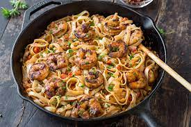

Cajun Shrimp Alfreado

Creamy Cajun shrimp alfreado pasta will quickly become one of your favorite dishes to make because how easy, simple, and incredibly delicious it is. Fettucine alfreado with an addition of cajun seasoning paired with delectable shrimp as a protein will elevate a simple dish to a top tier meal.
Ingredients
- Shrimp
- Cajun Seasoning
- Butter
- Cooking oil
- Minced garlic
- Heavy whipping cream
- Fettucinne noodles
- Parmesan cheese
- Salt
- Parsely
- Water
How to cook it!
- First season your shrimp with cajun seasoning on both sides and set aside
- Get a skillet or cooking pan and drizzle your cooking oil on it
- Add shrimp to your skillet and cook shrimp on both sides until fully cooked
- Transer shrimp onto new plate while keeping as much as the oil and charred bits in the cooking pan
- Without cleaning your pan, melt butter over cooking pan over medium heat
- Add minced garlic and stir until garlic is partially cooked or very fragrant
- Add heavy whipping cream and mix
- Add in fresh parmesan cheese, enough so that the mixture thickens up
- Add in salt and pepper to taste and if mixture is too thick, add in pasta water
- Cook Fettucine noodles as instructed on box or cook it a minute or two less then instructed
- Add cooked fetuccine noodles into the cooking pan with sauce and gently mix it so the noodles are coated with the sauce
- Add in shrimp on the top
- Sprinkle fresh parsely on top
- Serve onto plate
- Top off dish with preffered amount of parsely and grated parmesan cheese
For more delecious recipes!